Affective computing
Affective computing (also called "Artificial emotional intelligence") can be divided into 3 main topics, which are: display, identification and synthesis. For an IA to interact naturally with a user, it is obligate to go through these 3 phases. IEA (Artificial Emotional Intelligence) brings together various fields of research such as information, psychology and cognitive science (study of interactions between technologies and feelings).
Why was it invented ?
According to studies, current technologies would be very far from being able to satisfy the population. Technologists have ignored the emotions emanating from humans, creating frustrating experiences for users. This consequence is due to a lack of understanding and a lack of measure of the emotional. It was then that the experts decided to look into the issue and meet the needs of the users.
Who manage it ?
The MIT (Massachusetts Institute of Technology) Media Lab aims to develop new technologies / theories that advance the understanding of the emotional and its role in the human experience. In order to best meet the needs of humans, MIT seeks to strike a fair balance between emotion and cognition (psychological activities related to knowledge) in the field of technology design. It must be understood that emotion is in total opposition to cognition.
Made with ♥ by Mathilde Herard, Noémie Eyoum, Christine Huang et Circé Grand.
Initiation of electronic platelets and cognitive links in progress_
_100%